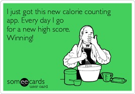

Overview
So you want to get fit, AKA get shredded. You've come to the right place. Follow these simple steps and you'll get that ripped bod you've always wanted. However, there are no magic or shortcuts either. It's 100% all hard work. I won't sell you any producs but I'll share you all the knowledge I have. Let's get started.
Calories and Macros
Probably very important. Actually, more important than the workout itself. In a nutshell, if you want to gain weight (fat, muscle, weight in general), you have to eat above your maintenance. On the contrary, if you want to lose weight, yup..you guessed it right, you have to eat below your maintenance. What is the 'maintenance' you ask. It is the number of calories you eat daily and you won't lose weight. That's not magic. That's a fact.
Fitness isn't all about working out, if you are serious about this journey, you have to learn about macros and calories. The number of calories and the macros depend on the individual but fundamentals are all the same. Beware, NUMBERS coming up. For me as an example, 170 lbs 5'11 male with an active lifestyle, if I want to gain weight, I have to eat 200-300 above my maintenance calories which is 2590. If i want to lose weight, then 200-300 less calories than that. Pretty easy.
Now let's talk about macros. Protein, fat, and carbs. In general, if you are on your bulking phase, you bump up that carb intake and if you are cutting, then bump up that protein intake. Rule of thumb, 1g-1.2g of protein = your body weight (when cutting). For example, me... If I want to bulk, I have tp consume 3050 calories and the macros is 50% carbs(381g), 20% protein(153g), and 30% fat(102g). Feel free to tweek this a little. These numbers work for me, but maybe not for you. When I cut then I have to eat 2300 calories which is 40%carbs(230g), 30% protein(173g), and 30% fat(77g). Again, feel free to tweek this a little bit. Don't be like this though 
If you need to calculate your own macros, my go to is MyFitnessPal. Or, here's a useful link I found online for macro calculator.
Diet
This is basically reiterating what was said above but it's always good to eat your vegetables. Micronutrients is very important as well. But if you eat 4000 calories of vegetables, you'll still gain weight no matter what. Just be careful. Eat your vegetables!
Workout
Finally, some workout. I will only be giving you some fundamental workouts because there are better resources for exercises out there, like Youtube.
| Back Exercises | # of reps |
|---|---|
| Lat pulldowns | 8-12 |
| Dumbell rows | 8-12 |
| Pull-ups | 8-12 |
| cable rows | 8-12 |
| Chest Exercises | # of reps |
|---|---|
| Bench press | 8-12 |
| Inclined dumbell press | 8-12 |
| Cable flies | 8-12 |
| dumbell press | 8-12 |
| Leg exercises | # of reps |
|---|---|
| Squats | 8-12 |
| Lunges | 8-12 |
| Hip thrusts | 8-12 |
| leg curls | 8-12 |
| Arm exercises | # of reps |
|---|---|
| Overhead press | 8-12 |
| Bicep curls | 8-12 |
| Tricep extensions | 8-12 |
| Shoulder dumbel press | 8-12 |